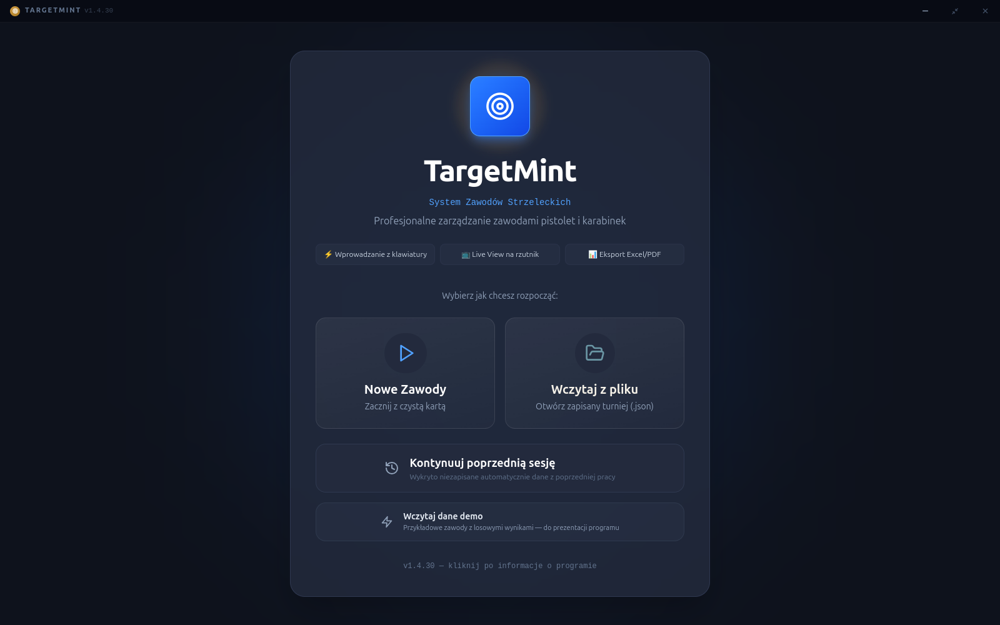
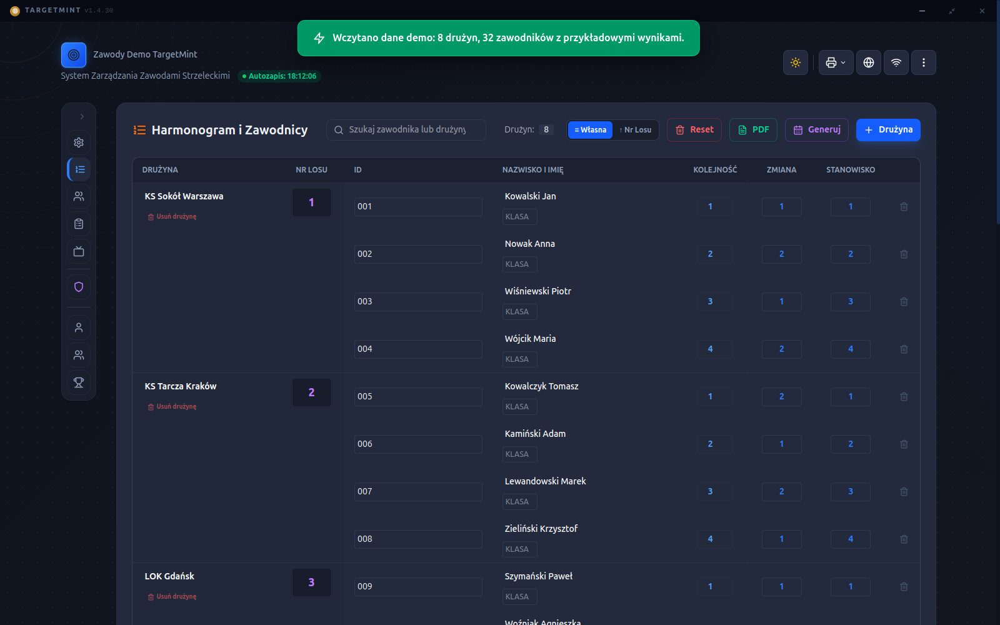
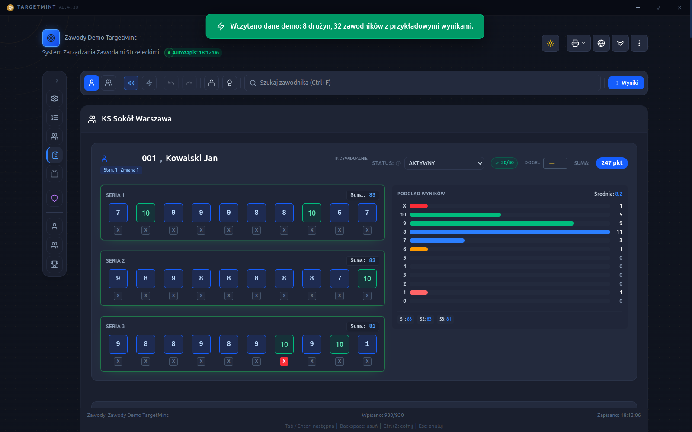
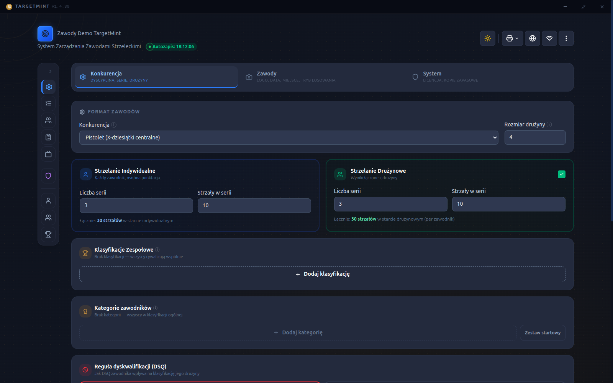
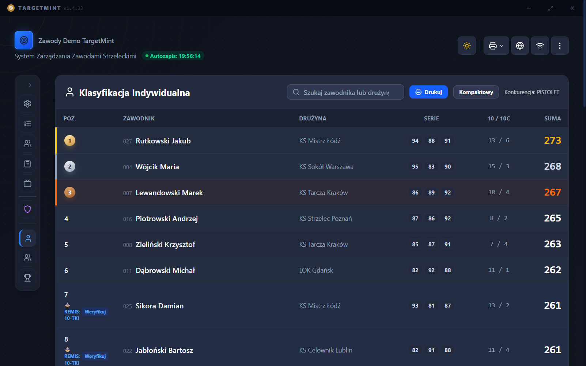
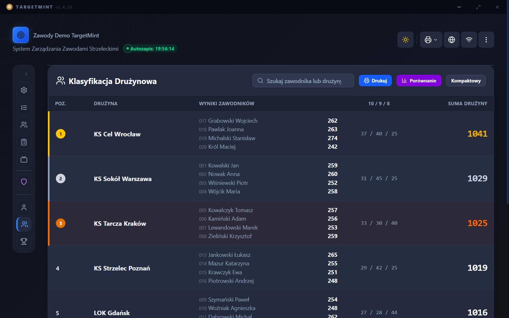

TargetMint to desktopowa aplikacja do prowadzenia zawodów strzeleckich (pistolet/karabinek) — wpisywanie wyników, ranking na żywo na rzutniku i oficjalne dokumenty gotowe do podpisu działają w pełni bez internetu na strzelnicy. Gdy internet jest dostępny, kilku sędziów może wprowadzać wyniki jednocześnie z osobnych stanowisk.
Każda funkcja odpowiada na coś, co faktycznie dzieje się na strzelnicy w dniu zawodów.
Dyscyplina, liczba serii i strzałów, strzelanie indywidualne i drużynowe, wielopoziomowe klasyfikacje zespołowe, kategorie zawodników.
Pełna obsługa z klawiatury, tryb wprowadzania seryjnego, podgląd rozkładu strzałów na żywo.
Indywidualna, drużynowa i zespołowa, z automatyczną propagacją dyskwalifikacji i wsparciem dla dogrywek.
Protokoły wyników i Komunikat Końcowy w formacie DOCX, gotowe do wydruku i podpisu.
Widok wyników na żywo na rzutniku: podium, tabela indywidualna i drużynowa, z automatycznym obrotem widoków.
Historia startów, log audytu zmian wyników, automatyczne kopie zapasowe, opcjonalne szyfrowanie danych.
Zero mockupów — to dokładnie to, co widzi organizator podczas zawodów.






Aplikacja przy pierwszym uruchomieniu poprosi o aktywację licencji — na tym etapie wydawaną ręcznie, napisz na Discordzie albo mailem, żeby ją dostać.
Wymagania: Windows 10 lub 11, 64-bit.
Uruchom instalator .exe i postępuj zgodnie z kreatorem.
Aplikacja nie jest jeszcze podpisana certyfikatem (wczesny dostęp) — Windows SmartScreen pokaże ostrzeżenie. Kliknij „Więcej informacji", a potem „Uruchom mimo to".
Pobierz dla Windows →⚠ obecnie wersja 1.4.30
Build Linuksa wymaga osobnego procesu (poza tym używanym dziś do Windows) — nowsza wersja (aktualnie 1.4.33 na Windows) trafi na Linuksa wkrótce. Funkcjonalnie to ten sam program.
Pakiet .deb:
sudo dpkg -i nazwa-pliku.deb
Albo uruchom .AppImage bezpośrednio — nie wymaga instalacji.
Tak, w pełni offline — poza publikacją wyników online, auto-aktualizacją i Sesją na żywo (wieloosobowe wprowadzanie wyników), które wymagają internetu.
Przy pierwszym uruchomieniu zobaczysz identyfikator komputera — wyślij go na TargetMint@protonmail.com albo na Discordzie, dostaniesz plik licencyjny.
.AppImage (uniwersalny, działa na większości dystrybucji) albo .deb
(Debian/Ubuntu/Mint). Build Linuksa jest chwilowo w tyle za Windows (dziś 1.4.30 vs 1.4.33) —
nadrobimy to wkrótce.
Windows i AppImage aktualizują się automatycznie w tle. Paczka .deb wymaga
pobrania nowszego pliku i ręcznej instalacji.
Tak — pełne wsparcie ą, ć, ę, ł, ń, ó, ś, ź, ż.
Discord to dziś główne miejsce, gdzie informuję o nowościach, odpowiadam na pytania i zbieram zgłoszenia błędów od pierwszych testerów.